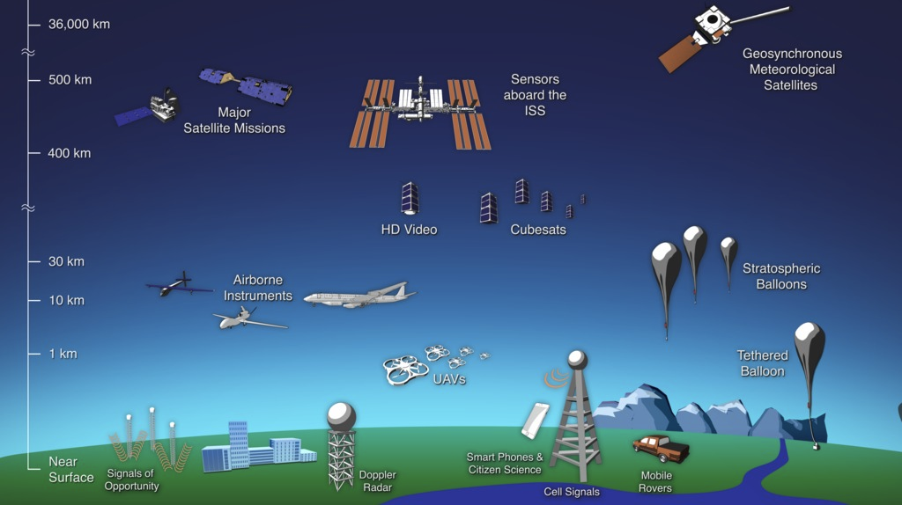
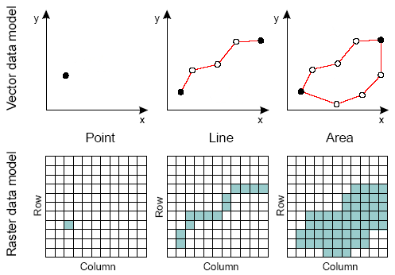
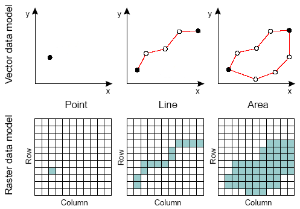

Module 1: Introduction¶
1. Introduction to remote sensing (10 min)¶
1. 1 What is remote sensing?¶
This can be accomplished through many devices that carry sensors and capture the characteristics of Earth remotely.

Source: NASA’s Goddard Space Flight Center
Sensors on board satellites also record the electromagnetic energy that is reflected or emitted from objects on Earth.
Passive and Active Sensors¶
Sensors on board satellites can be classified into two main categories: Passive and Active.
Passive remote sensing¶
The energy of the sun is composed of many kinds of radiation, some of it is contained in the visible part of the electromagnetic spectrum, which are commonly stored as values in the Red, Green, and Blue bands of the spectrum (R,G,B).
Meaningful information is also contained in parts of the spectrum outside the range of human vision, including infrared (IR) and ulta-violet (UV).
The energy of the sun is absorbed or scattered through the atmosphere before it reaches earth.
In Remote Sensing analysis we aim to learn about objects on Earth through studying the radiation reflected and/or emitted by them.
 Source:
Source: 1.2 Spatial, spectral and temporal resolutions in remote sensing¶
Remotely sensed sensors are characterized by different resolutions which will impact the decision as to which data to use and for which application (this is often referred to as “Fit-for-Purpose” technologies.
Spatial resolution:¶
Landsat-7 (30m)¶

Sentinel-2 (30m)¶
Worldview (30cm)¶
In this course: we will be working with VIIRS-DNB data, which has a spatial resolution of about 500m per pixel at the equator.
Spectral resolution:¶
Typically, multispectral imagery refers to 3 to 10 bands, while hyperspectral imagery consists of hundreds or thousands of (narrower) bands (i.e. higher spectral resolution).

Multispectral imagery¶

Hyperispectral imagery¶
Source: https://gisgeography.com/multispectral-vs-hyperspectral-imagery-explained
In this course: we will be working with VIIRS-DNB data, which is a single panchromatic channel covering the wavelengths ranging from 500 to 900 nanometers.
Temporal resolution:¶
Generally speaking, the larger the swath width of a satellite, which you can think of as the width of the sensor’s field of view “cross-track” (or “left to right”) during an orbital pass , the higher the temporal resolution.
Trade-offs in remote sensing resolution:¶
There is an inherent tradeoff between spatial, spectral and temporal resolutions. Typically, the higher the spatial resolution, the lower the spectral and the temporal resolution and the higher the temporal resolution, the lower the spatial and spectral resolutions.
 Source: https://dx.doi.org/10.4135/9780857021052.n1
Source: https://dx.doi.org/10.4135/9780857021052.n1
In this course: we will be using VIIRS-DNB data, which is collected every 12 hours, once during the day and once during the night (at approximately 1:30 am local time). We’re only interested in the nighttime pass, so our data has a daily temporal resolution. However, as we will learn, it’s helpful to aggregate data to account for noise, such as cloud-cover, so our final analysis may end up using composite data that has time periods of up to a month or a year.
1.3 Raster vs. Vector data¶
Geospatial data from the “real world” can be stored in different types formats or data types: In this course we will work with two types of geospatial data stored as either a raster or a vector format.
The coordinates of the corner points and the spacing of the grid can be used to calculate (rather than to store) the coordinates of each point in the grid. Any given point in the grid stores one or more values (in one or more bands). A satellite image, any image you take with a camera or even a map you are looking at are examples of data stored in a raster format. The image is composed of pixels that are organized in rows and columns, with values and location. The size of a given pixel depends on the spatial resolution of the sensor. Raster files are often composed out of multiple bands (channels). Each band represents, for example, the amount of electromagnetic radiation reflected from the surface on Earth along multiple regions of the electromagnetic spectrum.
Raster data is typically used to represent continuous surfaces, where knowing the exact boundaries in high precision are less of importance.
A point is a line with only one coordinate (X and Y) and an area is a line that closes on itself to enclose a region (a line will have two coordinates). Polygons are used to represent the area and perimeter of a geographic feature. Vector data stores features in their original resolution, without aggregation. Vector data is often used to define centers or edges of features.
 
Source: http://www.newdesignfile.com/post_vector-and-raster-data-model_15523/

Source: http://www.newdesignfile.com/post_vector-and-raster-data-model_15523/
1.4 Applications of remotely-sensed derived data in socio-economic research¶
The use of remotely sensed observations are useful for a wide-range of economic research applications. Donaldson and Storeygard, 2016 [1] outline some advantages of using remotely sensed data for economic research applications:
1. Improved accessibility to information difficult to obtain by other means:
Remote sensing technologies can collect panel data at low marginal cost, repeatedly, and at large scale, providing proxies for a wide range of characteristics that are hard (or impossible) to measure by other means.
2. High(er) spatial resolution:
Remotely sensed data are typically available at a higher spatial resolution than other traditional data sources. A variety of publicly available satellite imagery that is used by economists provides measurements of every location on Earth and are not constrained to a specific scale in which the data was collected at or aggregated to.
3. Wide geographic coverage and high spatial resolution:
Data collected by satellites provide continuous and consistent observations of phenomena on Earth, regardless of the conditions on the ground (e.g. political strife or natural disasters), across borders, including inaccessible locations and with a uniform spatial sampling. Satellites collect data at a substantial temporal coverage, capturing every location on Earth on a daily or weekly basis, with some of the satellites capturing every location on Earth since the 1970s.
4. Nighttime lights are especially useful for socio-economic research and applications:
There is a strong correlation between nighttime lights and GDP measures at the national or state level (e.g. Henderson et al. (2012) [2], Gosh et al. (2010) [3]). Nighttime lights can be used as a proxy for measuring Gross State Product (GSP) or Gross Domestic Product (GDP), especially over periods or regions where this data is not available. Similarly, changes in nighttime light intensity can be used as an additional measure of income growth, for example, at the national level, when no measures of income growth are available.
[TO DO: Add remaining examples]
Sub-module references:¶
Donaldson, Dave, and Adam Storeygard. “The view from above: Applications of satellite data in economics.” Journal of Economic Perspectives 30.4 (2016): 171-98.
Henderson, J. V., A. Storeygard, and D. N.Weil. 2012. “Measuring Economic Growth from Outer Space.” American Economic Review 102 (2): 994–1028.
Ghosh, T., L Powell, R., D Elvidge, C., E Baugh, K., C Sutton, P., & Anderson, S. (2010). Shedding light on the global distribution of economic activity. The Open Geography Journal, 3(1).